リンク集
導入手順
ZIPファイルをダウンロードする
ページ右上の緑色の「Code」ボタンをクリックし、 メニュー内の「Download ZIP」を選択してダウンロードしてください。
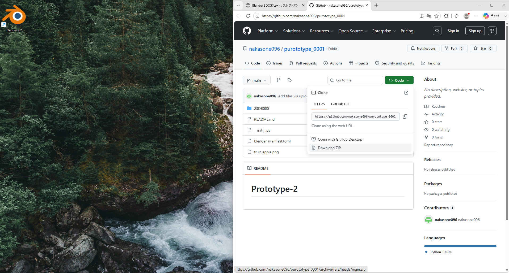
ZIPファイルをデスクトップに置く
ダウンロードしたZIPファイルをデスクトップに移動してください。
⚠ このZIPファイルは解凍（展開）しないでください。
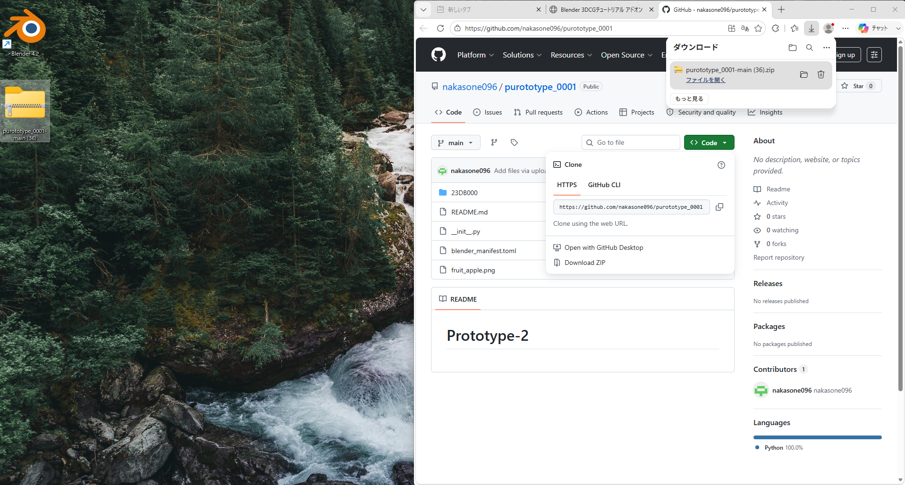
ZIPの中の「23DB000」フォルダをコピーする
ZIPファイルを開き（解凍はしない）、 中にある「23DB000」フォルダをデスクトップにコピーしてください。
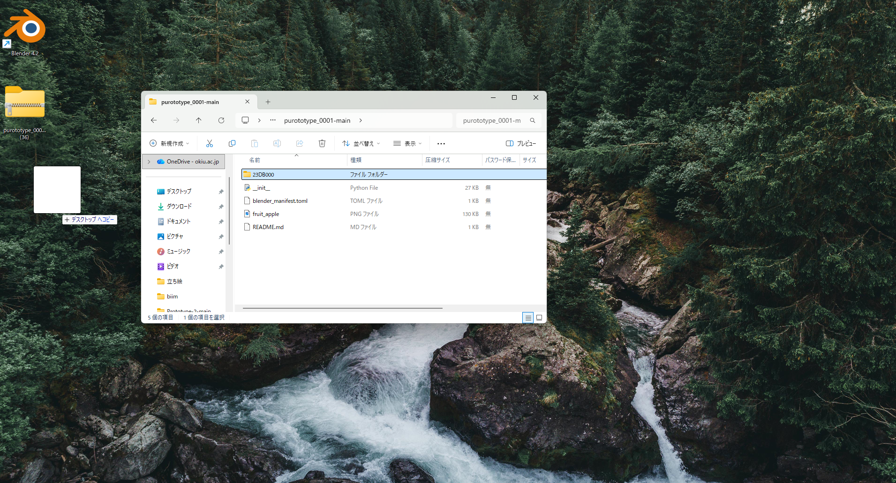
フォルダ名を自分の学籍番号に変更する
デスクトップにコピーした「23DB000」フォルダを右クリックし、
「名前の変更」から自分の学籍番号に変更してください。
（例：23DB096）
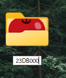
Blenderの言語を日本語に設定する
Blenderを起動したら、画面上部の「Edit（編集）」→「Preferences（プリファレンス）」を開き、 「Interface（インターフェース）」タブ内の 「Language（言語）」を「Japanese（日本語）」に変更してください。
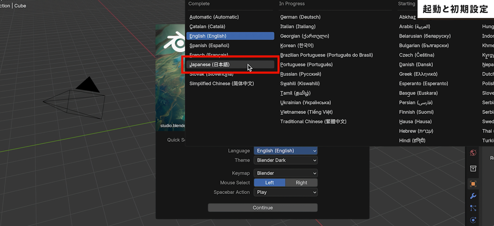
プリファレンスを開く
画面上部の「編集」タブをクリックし、 メニュー内の「プリファレンス」を選択してください。
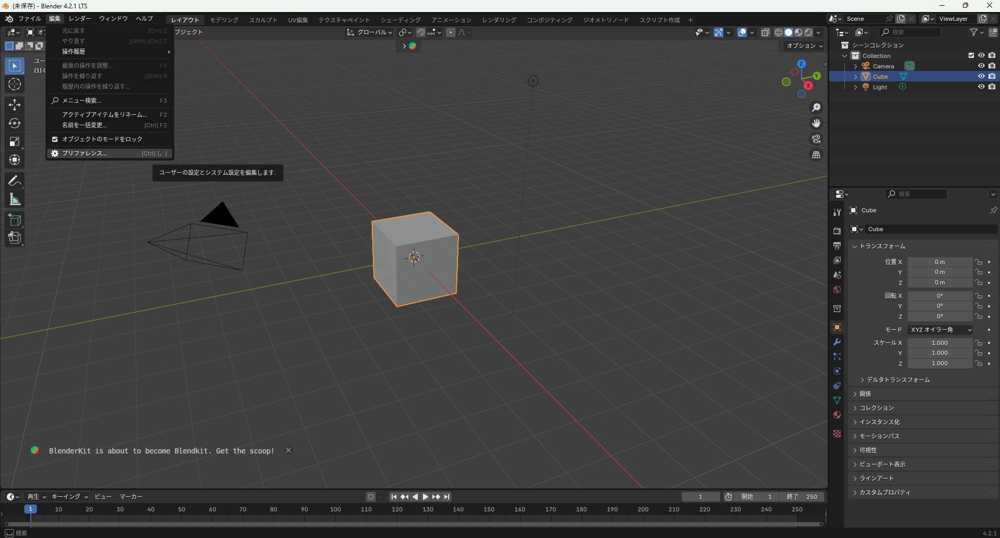
「ディスクからインストール」を開く
プリファレンスウィンドウ左側の「アドオン」を開き、 右上にある「∨（下向き矢印）」マークをクリックして 「ディスクからインストール」を選択してください。
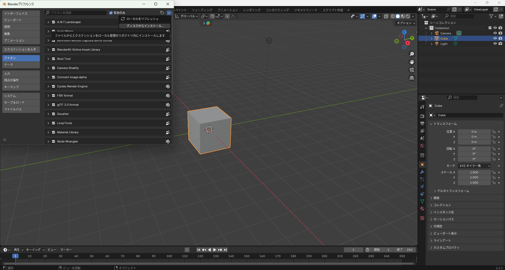
ZIPファイルを選択してインストールする
ファイルブラウザが開いたら、以下の順に進んでください。
「デスクトップ」→「purototype_0001-main.zip」を選択
→ 右上の「ディスクからインストール」ボタンをクリック
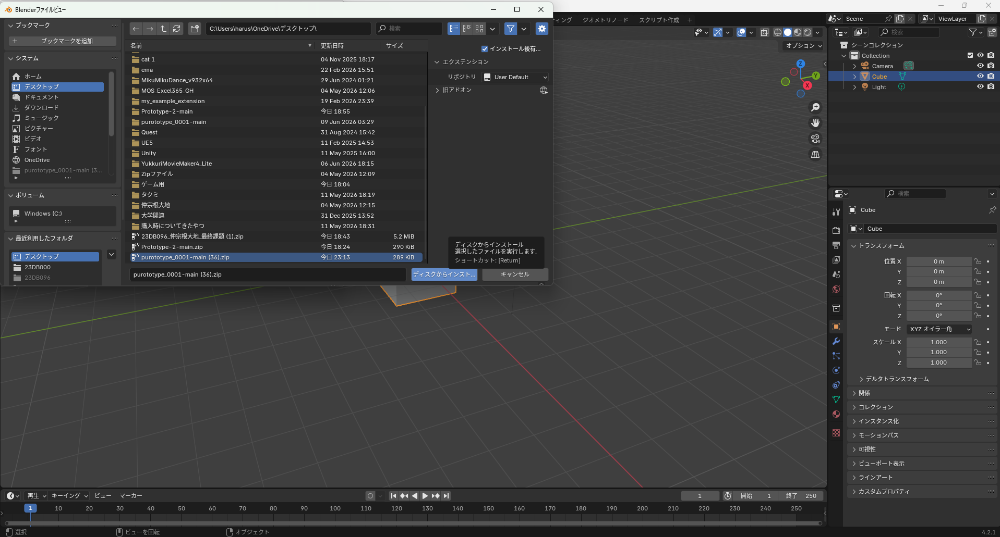
アドオンパネルを開いて起動を確認する
プリファレンスウィンドウを閉じ、3Dビュー上で
「N キー」を押してサイドパネルを開いてください。
タブの中に「Tutorial」が表示されていれば、
インストール成功です。下の画像のように表示されることを確認してください。
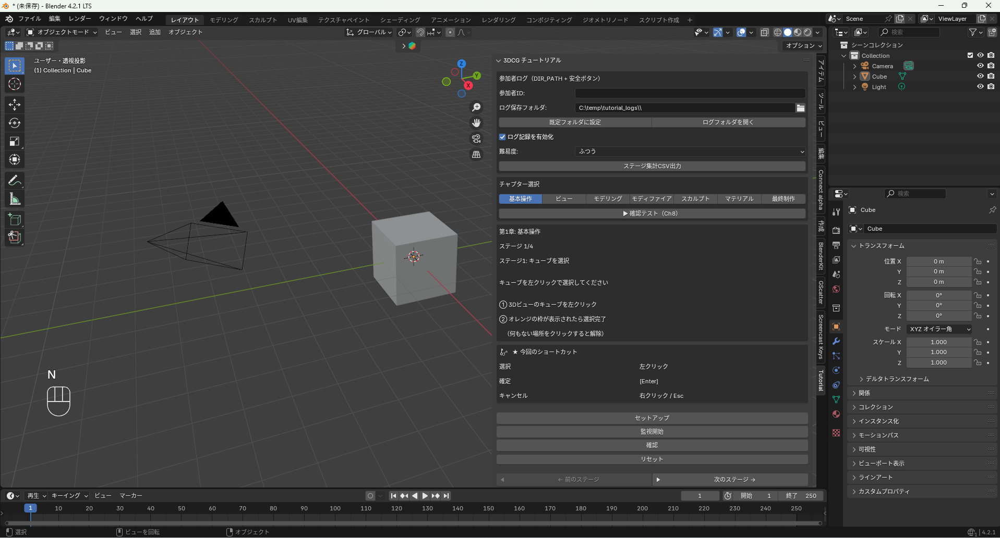
参加者IDに学籍番号を入力する
Tutorialパネル上部の「参加者ID」欄に、
自分の学籍番号を入力してください。
（例：23DB096）
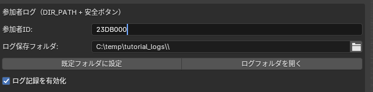
ログ保存フォルダを設定する
「ログ保存フォルダ」の右にある
フォルダアイコンをクリックしてください。
ファイルブラウザが開いたら「デスクトップ」を開き、
先ほど学籍番号に変更したフォルダ（例：23DB096）を開いて、
そのまま「フォルダーを開く」をクリックしてください。
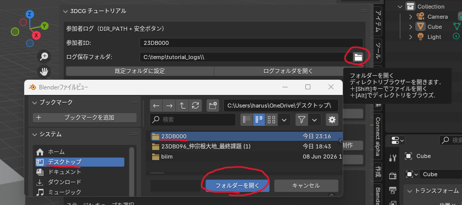
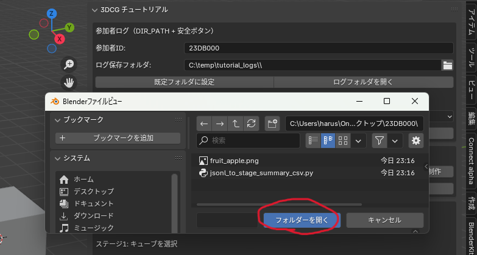
導入完了！
以上でアドオンの導入は完了です。
チュートリアルを開始して、Blenderの操作を学んでいきましょう。
よくある質問
アドオンが有効化されていない可能性があります。
「編集」→「プリファレンス」→「アドオン」を開き、
「3DCG Tutorial Simulator」にチェックが入っているか確認してください。
ZIPファイルを解凍（展開）してからインストールしようとしている可能性があります。
ダウンロードした purototype_0001-main.zip は解凍せずそのまま選択してインストールしてください。
デスクトップにコピーして学籍番号に変更したフォルダを選択してください。
（例：デスクトップ内の 23DB096 フォルダ）
操作が完了していない可能性があります。
パネル内のヒントをよく読んで、手順通りに操作してから再度「確認」ボタンを押してみてください。
失敗するたびにヒントが追加表示されます。
以下を試してみてください。
- スカルプトモードのブラシ解像度を下げる
- サブディビジョンサーフェスのレベル数を下げる（1〜2推奨）
- 他のアプリを閉じてBlenderに集中させる
お知らせ
パッチノート｜ver0.8.3（build0043）
変更点は以下です
- 最初のセットアップ時にポップアップウィンドウを追加
- クリア時のUIを変更
- バグの修正
- 説明文の訂正
ご協力ありがとうございます。
Blender 3DCGチュートリアルアドオンの紹介サイトを開設しました。
導入方法や関連リンクをまとめています。